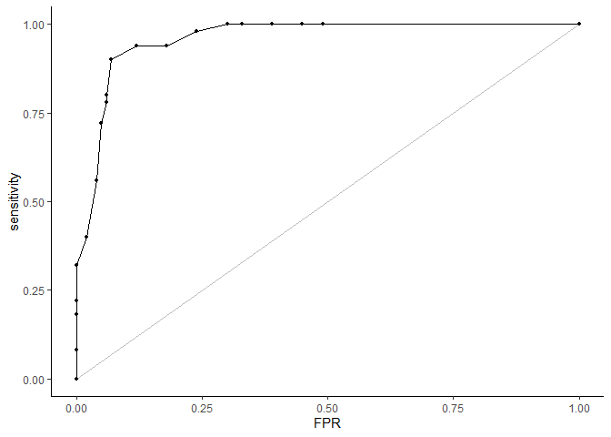

The goal of rtichoke is to …
Installation
You can install rtichoke from GitHub with:
# install.packages("devtools")
devtools::install_github("uriahf/rtichoke")Overview:
rtichoke is a package designed for interactive visualization for performance metrics of prediction models with a binary outcome.
Getting started
Predictions and Outcomes
In order to use rtichoke you need to have
-
probs: Estimated Probabilities as predictions (0 ≤ p̂ ≤ 1). -
real: Binary Outcomes (y ∈ {1, 0}).
There are 3 different cases and for each one of them rtichoke requires a different kind of input:
- One model for One Population: 🔀
The user is required to provide one vector for the model predictions and one vector for the outcome of the population.
library(rtichoke)
create_roc_curve(
probs = example_dat$estimated_probabilities,
real = example_dat$outcome
)(gif)
Alternatively the vector of the model predictions can be in a list:
create_roc_curve(
probs = list("Logistic Regression" = example_dat$estimated_probabilities),
real = example_dat$outcome
)
Make it Interactive
(gif roc, lift, precision recall, gains, NB curve for non-interactive-interactive )
- Several models for One Population 🔀 🌲 🙈
The user is required to provide one vector of predictions for each model in a list and one vector for the outcome of the population.
(code) probs = list(“Model 1†= …, “Model 2†= ..), real = c() (gif)
- Several Populations 👩👨
The user is required to provide one vector of predictions for each population in a list and one vector for each outcome of the population in another list.
(code) probs = list(“Train†= …, “Test†= …), real = list(“Train†= …, “Test†= …) (gif)
Performance Data
For roc, lift, precision recall, gains, decision curves and for performance table you can alternatively prepare a performance data and use it as an input, but instead of create_curve use plot_curve and instead of create_performance_table use render_performance_table: (gif render_roc_curve, prepare_performance_table, plot_roc_curve) (table of inputs)
Summary Report
In order to get all the supported outputs of rtichoke in one html file the user can call create_summary_report().
Getting help
If you encounter a bug please fill an issue with a minimal reproducible example, it will be easier for me to help you and it might help others in the future. Alternatively you are welcome to contact me personally: ufinkel@gmail.com